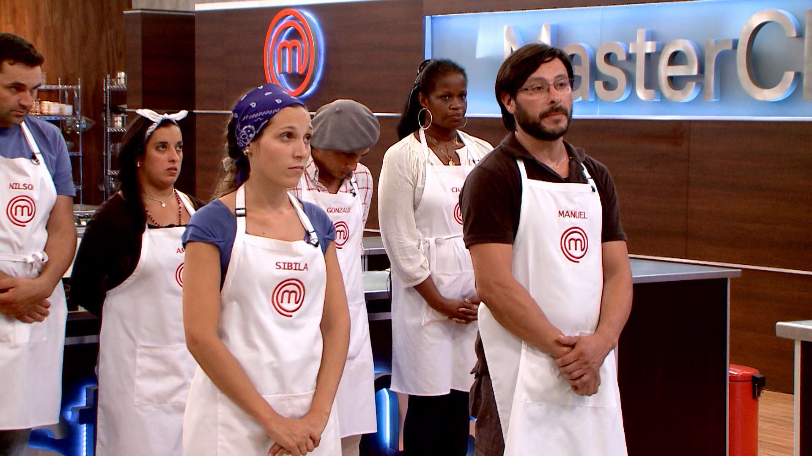

Llegó el tan esperado final de la primera temporada de MasterChef Uruguay, el reality de cocina más importante del mundo, ahora hecho en nuestro país.
En un clima de gran tensión, los cuatro participantes que todavía estaban en carrera se enfrentaron uno contra uno, en dos semifinales determinadas por sorteo: Lourdes vs. Nilson y Leticia vs. Nicolás.
Los dos ganadores, Leticia y Nilson, pasaron a la final, donde tuvieron 120 minutos para sorprender al jurado con tres platos: entrada, plato principal y postre. Pese a los nervios y la presión de la instancia que estaban atravesando, ambos participantes tuvieron un gran desempeño en la última prueba de la competencia, lo que hizo que la decisión del jurado no fuera nada sencilla.
Finalmente, Lucía, Sergio y Laurent dieron su veredicto y Nilson se convirtió en el primer maestro de la cocina de nuestro país. La alegría y la emoción se apoderaron de la cocina de MasterChef Uruguay y el festejo del ganador con su familia y sus excompañeros fue inolvidable.
En esta prueba tienen una caja que oculta los ingredientes o las cosas que puede haber en la caja. Con lo que tienen en la caja tienen que cocinar un plato con los ingredientes o las cosas que haya en la caja y sin poder ir al mercado, pueden usar todos los ingredientes que quieran ya sea 1 o todos.
En esta prueba estarán los peores platos de la prueba anterior. Tienen que cocinar cualquier plato, pero ese plato tiene que tener un ingrediente principal elegido por los Chefs (en cada prueba de eliminación el ingrediente principal sera distinto) En esta prueba siempre hay solo 1 perdedor, que es el queda eliminado de MasterChef. Esta es la única prueba que esta en todos los episodios.

En esta prueba se divide a la mitad los concursantes que hayan (equipo azul y rojo), cada equipo tiene un capitán que es el que elige a sus compañeros de equipo y el que elige que platos hacer. Los capitanes casi siempre son los 2 ganadores de la prueba anterior. Siempre en esta prueba los jurados no son los Chefs principales sino otras personas y siempre son muchas personas.
En esta prueba se formaran equipos de a 2 participantes. Tienen que hacer un plato elegido por cada equipo y hacerlo. Mientras uno cocina el otro se queda a un costado y le puede ayudar habladle y dolando consejos o advertirle algo pero no le puede ayudar cocinando o tocando algo. Después de determinado tiempo rotan y el que cocinaba, se queda a un costado hablándole y el otro cocina. Siempre rotan más de 1 vez.


| Nombre | Edad | Ocupación | Estado | Días |
|---|---|---|---|---|
| Nilson Viazzo | 36 | Policía | Campeón | 92 días |
| Leticia Cicero | 35 | Ingeniera química | Subcampeona | |
| Nicolás Rolandi | Odontólogo | Semifinalista | ||
| Lourdes Galván | 37 | Empleada |